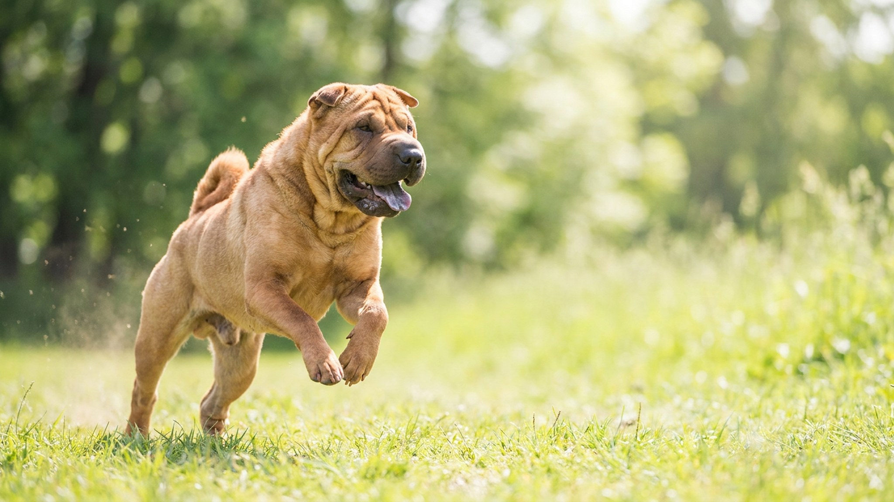

Складки шарпея умиляют всех, кто видит эту собаку впервые. Но для хозяина каждая складка — это тёплый влажный карман, где кожа не проветривается и охотно раздражается. Хорошая новость: чтобы этого избежать, хватает пары минут в день. Ниже — простая рутина и сигналы, по которым ясно, что складкам нужно внимание.
🐾 Не уверены, что это опасно?
Опишите симптом в AnimaLife — AI-ветеринар за минуту подскажет, что в пределах нормы, а когда пора к врачу.
Обильные складки — порода в чистом виде. У щенка их особенно много: кожа как будто «на вырост», и малыш буквально утопает в ней. С возрастом собака подрастает, часть складок разглаживается, но на морде, у холки и у основания хвоста они остаются на всю жизнь.
Вторая особенность породы — короткая жёсткая шерсть-«ёршик» и склонность кожи к чувствительности. Именно поэтому за шарпеем ухаживают иначе, чем за гладкошёрстной собакой без складок: внимание уходит не столько на шерсть, сколько на кожу в глубине складок.
В глубине складки темно, тепло и влажно: туда не попадает воздух, задерживается влага после прогулки, еды или питья. Такая среда — идеальная для раздражения и неприятного запаха. Особенно уязвимы складки на морде, вокруг губ и там, где кожа трётся о кожу.
Отдельная тема — глаза: они у шарпея посажены глубоко, и нависающая кожа может подворачивать веко внутрь. Если собака щурится, часто моргает или трёт морду лапой — это повод показать её ветеринару, а не ждать.
🐾 Питомец ведёт себя странно?
AnimaLife расшифрует поведение кошки и собаки и подскажет, что делать. Попробуйте бесплатно прямо в мессенджере.
🐾 Понравился разбор?
Подпишитесь на канал — каждый день разбираем по одному тревожному симптому у кошек и собак: что в пределах нормы, а когда пора к врачу. Подпишитесь, чтобы не пропустить разбор, который может спасти здоровье вашего питомца.
Присмотритесь, если из складки появился запах, кожа в ней покраснела, собака настойчиво чешет морду или трётся ею о мебель, а также если щурится или беспокоит глаз. Это не «характер породы», а сигнал, что коже нужна помощь. Что именно происходит и чем помочь — определяет ветеринар; ваша задача — вовремя заметить и описать врачу.
Складки шарпея — это не проблема, а особенность, которую легко держать под контролем. Две минуты внимания в день, сухость после прогулки и привычка осматривать кожу раз в неделю — и знаменитые морщинки останутся только поводом для умиления.
Материал носит информационный характер и не заменяет очную консультацию ветеринара.